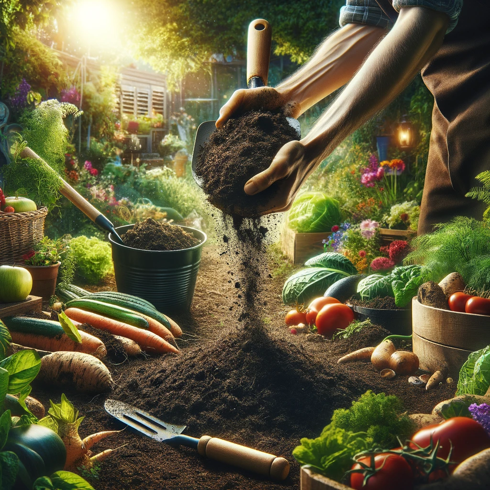

Gather leaves and grass clippings from your garden. This organic matter is the perfect ingredient for creating nutrient-rich compost. Ensure to mix green (nitrogen-rich) and brown (carbon-rich) materials for the best results.
Layer your collected materials in a compost bin or pile. Alternate between green and brown layers and keep the pile moist. Turn the pile every few weeks to aerate it, which speeds up the composting process.
Once your compost is dark, crumbly, and earthy-smelling, it's ready to use. Spread it in your garden to enrich the soil, support plant growth, and foster a vibrant, sustainable ecosystem right in your backyard.
This diagram visually represents the journey from collecting organic waste to using compost to nourish your garden. Follow each step to turn your kitchen and garden waste into gold for your plants.